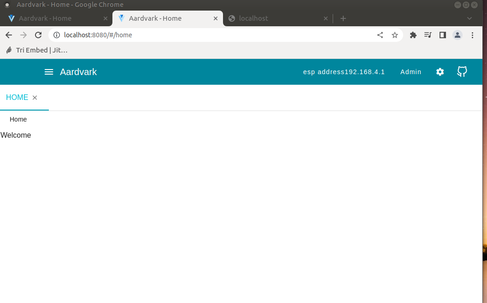
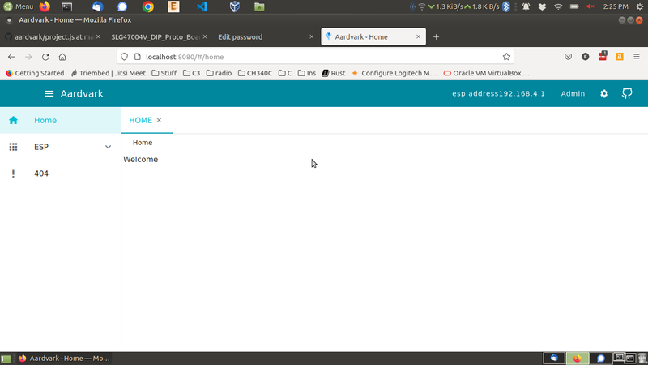
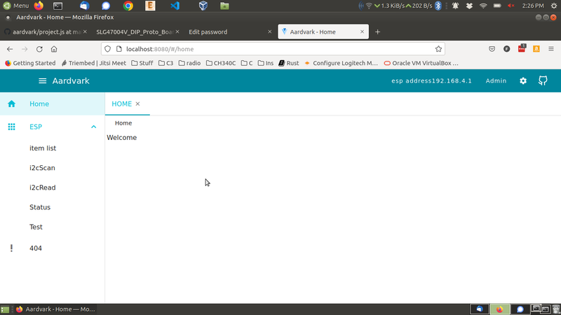
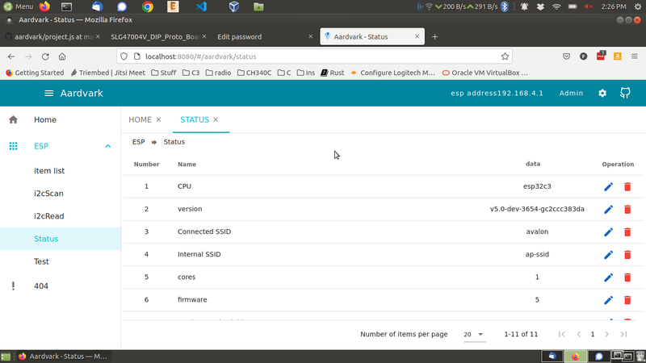
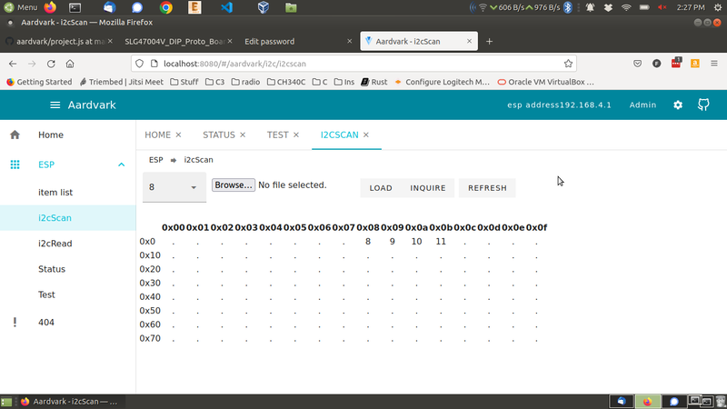
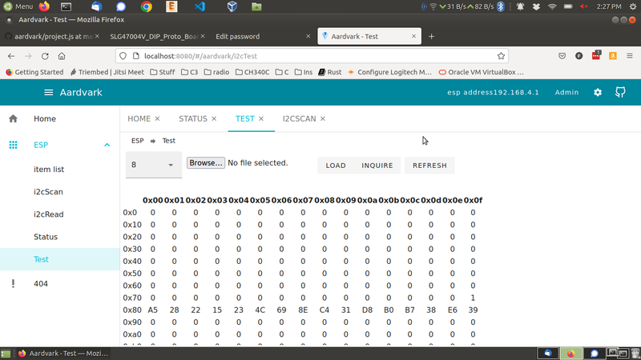
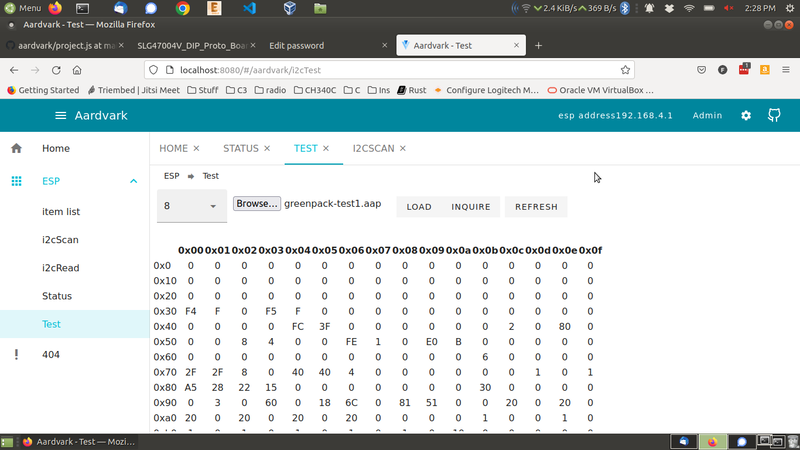

image1 - aardvark initial screen

image1 - aardvark screen after pressing three horizontal bars

image2 - after pressing the menu tab to right of ESP

image3 - after pressing status button

image4 - after pressing i2cscan button

image5 - after pressing test button

image6 - after pressing Browse.. button, selecting file Leage/CAD/greenpak-test1.aap file
image7 - after pressing Load button and starting FPGA operation
